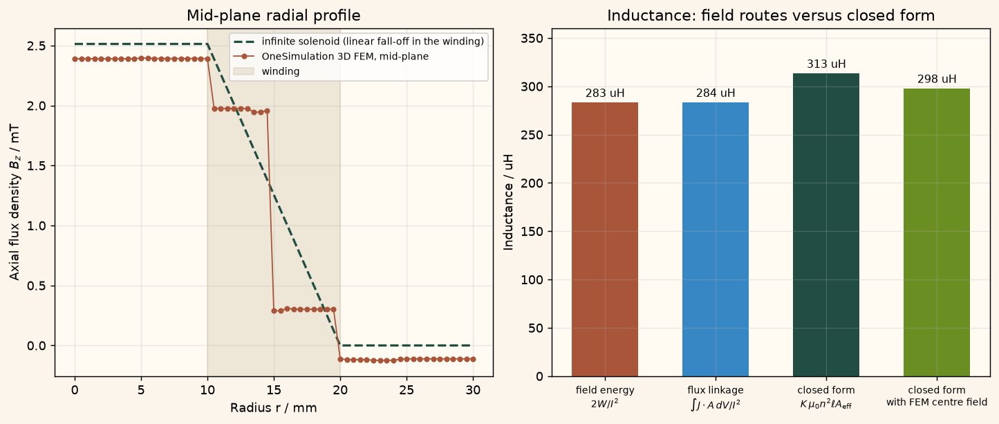

Docs › Examples › Inductance from the magnetic field energy
Magnetostatics · 3D
Inductance from the magnetic field energy
The inductance of a finite thick-winding solenoid extracted from the magnetic energy, graded against the Nagaoka-corrected closed form.

What it computes
OneSimulation solves the 3D magnetostatic field, integrates (1/2) B.H over the domain and cross-checks against the flux-linkage form (1/2) int J.A dV.
What it checks
The energy and flux-linkage routes agree to 0.04 %; the inductance lies within about 10 % of the Nagaoka-corrected reference, approaching it from below as the winding mesh is refined (a documented lower-bound property of the formulation).
The notebook
The complete notebook, cell by cell. Run it to produce the figures and the comparison printout.
A circuit designer does not want the field of a coil, but the one number it implies: its inductance. For a single winding carrying the current \(I\) it follows from the stored magnetic energy,
A homogenised solenoid (inner radius \(10\) mm, outer radius \(20\) mm, length \(120\) mm, \(240\) turns, \(1\,\mathrm A\)) is modelled as a uniform azimuthal current density on one explicitly meshed winding region. OneSimulation solves \(\nabla\times(\mu^{-1}\nabla\times\mathbf A)=\mathbf J\) with a weak Coulomb gauge and reconstructs \(\mathbf B=\nabla\times\mathbf A\) and \(\mathbf H=\mathbf B/\mu_0\). The energy is then integrated cell by cell over the whole computational domain.
Reference. The closed-form inductance used here is the long-solenoid formula for a winding of finite radial thickness, multiplied by Nagaoka's end-correction factor:
\(A_\mathrm{eff}\) is the exact energy-equivalent cross-section of an infinitely long winding in which \(B\) falls linearly from \(\mu_0 n I\) at \(R_i\) to zero at \(R_o\) (for a thin winding it reduces to \(\pi R_m^2\)). \(K\) is Nagaoka's factor for a current sheet of mean radius \(R_m\), written with complete elliptic integrals; for the present length-to-diameter ratio of 4 it is \(K\approx0.90\). Combining the two corrections multiplicatively is accurate to about 2 % for this winding.
Two effects make the finite-element inductance fall below \(L_\mathrm{ref}\), and both are quantified below: the magnetic insulation on the finite domain confines the return flux (about 3 %, estimated by a coaxial-return formula), and the finite-element energy of a vector-potential formulation is a lower bound that approaches the exact value from below as the winding is resolved more finely (a further 5-7 % on the modest mesh used here). The example tolerance of 12 % against the free-space closed form, and 10 % once the confinement estimate is taken out, covers both.
from importlib.metadata import version
import numpy as np
import matplotlib.pyplot as plt
from scipy.special import ellipe, ellipk
from onesim.cad.d3 import Cylinder
from onesim.materials import VacuumPermeability
from onesim.meshing import TetrahedralMesher, LocalRefinement
from onesim.numerics import Numerics
from onesim.numerics.fem import FiniteElement, Nedelec
from onesim.numerics.linear import SparseDirect
from onesim.physics.magnetostatics import (
CoulombGauge, MagneticInsulation, MagneticVectorPotential,
Magnetostatics, SolenoidCurrent,
)
from onesim.simulation import Problem, Simulation
print("OneSimulation:", version("onesimulation"))Parameters and closed-form reference
domain_length, domain_radius = 0.32, 0.08 # m, finite computational cylinder
coil_length = 0.12 # m, solenoid length
inner_radius, outer_radius = 0.010, 0.020 # m, homogenised winding annulus
turns, current = 240, 1.0 # -, A
center_z = domain_length / 2.0 # coil centred in the domain
mu0 = float(VacuumPermeability().evaluate())
turns_per_metre = turns / coil_length # n
winding_thickness = outer_radius - inner_radius # w
mean_radius = 0.5 * (inner_radius + outer_radius) # R_m
B_ideal = mu0 * turns_per_metre * current # mu0 n I
area_eff = np.pi * (inner_radius**2 + winding_thickness * (outer_radius + 3 * inner_radius) / 6.0)
# Nagaoka's end-correction factor for a current sheet (complete elliptic integrals).
k2 = (2 * mean_radius) ** 2 / ((2 * mean_radius) ** 2 + coil_length**2)
nagaoka = 4.0 / (3.0 * np.pi * np.sqrt(1.0 - k2)) * (
((1.0 - k2) / k2) * (ellipk(k2) - ellipe(k2)) + ellipe(k2) - np.sqrt(k2))
L_long = mu0 * turns_per_metre**2 * coil_length * area_eff # infinitely long, thick winding
L_ref = nagaoka * L_long # finite length (Nagaoka)
# Coaxial-return estimate of the flux confinement by the magnetic insulation at r = R_d.
area_return = np.pi * domain_radius**2 - area_eff
confinement = 1.0 / (1.0 + area_eff / area_return)
print(f"effective winding area A_eff = {area_eff*1e6:.1f} mm^2 (thin-sheet pi*R_m^2 = {np.pi*mean_radius**2*1e6:.1f} mm^2)")
print(f"Nagaoka factor K(l/2R_m = {coil_length/(2*mean_radius):.1f}) = {nagaoka:.4f}")
print(f"closed-form inductance: L_ref = K * mu0 n^2 l A_eff = {L_ref*1e6:.1f} uH")
print(f"flux-confinement estimate for the finite domain: factor {confinement:.3f}")Model, mesh and solver
Every face of the cylindrical domain carries magnetic insulation. The winding annulus is an embedded mesh region with a local target size small enough for two to three tetrahedra across the winding thickness, where \(B\) falls off linearly.
geometry = Cylinder(radius=domain_radius, length=domain_length)
coil = SolenoidCurrent(
inner_radius=inner_radius, outer_radius=outer_radius, length=coil_length,
center=(0.0, 0.0, center_z), turns=turns, current=current,
)
model = Magnetostatics(
domain=geometry.volume, permeability=VacuumPermeability(),
formulation=MagneticVectorPotential(gauge=CoulombGauge()), current_sources=(coil,),
)
problem = Problem(
name="Solenoid inductance from field energy",
geometry=geometry, physics=(model,),
boundary_conditions=(MagneticInsulation(boundary=geometry.boundaries.all, physics=model),),
)
mesh = TetrahedralMesher(
target_size=0.03, embedded_regions=(coil.support,),
refinements=(LocalRefinement(region=coil.support, target_size=0.0033),),
).generate(geometry)
print("Mesh:", f"{mesh.cell_count} tetrahedra")
result = Simulation(
problem=problem, mesh=mesh,
numerics=Numerics(spatial=FiniteElement(element=Nedelec(order=1)), linear_solver=SparseDirect()),
).solve_stationary()Field energy and inductance
With first-order Nedelec elements \(\mathbf B=\nabla\times\mathbf A\) is constant on every tetrahedron, so a one-point (centroid) rule integrates \(\mathbf B\cdot\mathbf H\) exactly. The same rule applied to \(\tfrac12\int\mathbf J\cdot\mathbf A\,\mathrm dV\) over the winding cells (flux-linkage form of the energy) must give the same value: for the Galerkin solution the two energy forms coincide.
B_field = result.field(model.magnetic_flux_density)
H_field = result.field(model.magnetic_field_strength)
A_field = result.field(model.vector_potential)
vertices = np.asarray(mesh.coordinates)[np.asarray(mesh.cells)] # (cells, 4, 3)
edges = vertices[:, 1:] - vertices[:, :1]
cell_volumes = np.abs(np.einsum("ij,ij->i", edges[:, 0], np.cross(edges[:, 1], edges[:, 2]))) / 6.0
centroids = vertices.mean(axis=1)
print(f"Quadrature: {len(centroids)} cell centroids, meshed volume {cell_volumes.sum()*1e3:.3f} dm^3 "
f"(cylinder {np.pi*domain_radius**2*domain_length*1e3:.3f} dm^3)")
B_cells = np.asarray(B_field.evaluate(centroids))
H_cells = np.asarray(H_field.evaluate(centroids))
energy_cells = 0.5 * np.einsum("ij,ij->i", B_cells, H_cells) * cell_volumes
W_energy = float(energy_cells.sum())
L_energy = 2.0 * W_energy / current**2
# Flux-linkage form: J is the uniform azimuthal winding current density.
radius = np.hypot(centroids[:, 0], centroids[:, 1])
inside_length = np.abs(centroids[:, 2] - center_z) < coil_length / 2.0
in_core = (radius < inner_radius) & inside_length
in_winding = (radius >= inner_radius) & (radius < outer_radius) & inside_length
J_magnitude = turns * current / (winding_thickness * coil_length)
J_cells = np.zeros_like(centroids)
J_cells[in_winding, 0] = -J_magnitude * centroids[in_winding, 1] / radius[in_winding]
J_cells[in_winding, 1] = J_magnitude * centroids[in_winding, 0] / radius[in_winding]
A_cells = np.asarray(A_field.evaluate(centroids[in_winding]))
W_linkage = 0.5 * float(np.sum(np.einsum("ij,ij->i", J_cells[in_winding], A_cells) * cell_volumes[in_winding]))
L_linkage = 2.0 * W_linkage / current**2
# Centre field: same closed form with the computed centre field in place of mu0 n I.
B_centre = np.asarray(B_field.evaluate(np.array([[0.0, 0.0, center_z]])))[0]
centre_axial = float(B_centre[2])
L_centre = nagaoka * turns * centre_axial * area_eff / current
share = {name: float(energy_cells[mask].sum()) / W_energy
for name, mask in (("core", in_core), ("winding", in_winding), ("outside", ~(in_core | in_winding)))}
print(f"stored energy: {W_energy*1e6:.2f} uJ (core {100*share['core']:.0f} %, winding {100*share['winding']:.0f} %, "
f"outside {100*share['outside']:.0f} %)")
print(f"L from field energy 2W/I^2: {L_energy*1e6:.1f} uH")
print(f"L from flux linkage int J.A dV / I^2: {L_linkage*1e6:.1f} uH")
print(f"L closed form K mu0 n^2 l A_eff: {L_ref*1e6:.1f} uH")
print(f"centre field: {centre_axial*1e3:.3f} mT = {centre_axial/B_ideal:.3f} mu0 n I; "
f"closed form with this centre field: {L_centre*1e6:.1f} uH")
ratio_ref = L_energy / L_ref
ratio_confined = L_energy / (L_ref * confinement)
ratio_centre = L_energy / L_centre
ratio_routes = abs(L_energy - L_linkage) / L_energy
print(f"L_energy / L_ref = {ratio_ref:.3f} (free-space closed form; FEM lies below it)")
print(f"L_energy / (L_ref * confinement) = {ratio_confined:.3f} (finite-domain confinement taken out)")
print(f"L_energy / L_centre-based closed form = {ratio_centre:.3f} (confinement bias removed, mesh error remains)")
print(f"energy route vs flux-linkage route: {100*ratio_routes:.2f} %")Figure
cream = "#fbf5eb"
fig, (ax1, ax2) = plt.subplots(1, 2, figsize=(11, 4.6), constrained_layout=True)
fig.patch.set_facecolor(cream)
for ax in (ax1, ax2):
ax.set_facecolor("#fffaf2"); ax.grid(alpha=0.25)
r_line = np.linspace(0.0, 1.5 * outer_radius, 61)
Bz_line = np.asarray(B_field.evaluate(np.column_stack((r_line, np.zeros_like(r_line), np.full_like(r_line, center_z)))))[:, 2]
Bz_ideal = np.where(r_line < inner_radius, 1.0, np.clip((outer_radius - r_line) / winding_thickness, 0.0, 1.0)) * B_ideal
ax1.plot(r_line * 1e3, Bz_ideal * 1e3, color="#214D43", lw=1.8, ls="--", label="infinite solenoid (linear fall-off in the winding)")
ax1.plot(r_line * 1e3, Bz_line * 1e3, "o-", color="#A85539", ms=3.5, lw=1, label="OneSimulation 3D FEM, mid-plane")
ax1.axvspan(inner_radius * 1e3, outer_radius * 1e3, color="#c9b89a", alpha=0.3, label="winding")
ax1.set(xlabel="Radius r / mm", ylabel="Axial flux density $B_z$ / mT", title="Mid-plane radial profile")
ax1.legend(fontsize=8)
labels = ("field energy\n$2W/I^2$", "flux linkage\n$\\int J\\cdot A\\,dV/I^2$",
"closed form\n$K\\,\\mu_0 n^2 \\ell A_\\mathrm{eff}$", "closed form\nwith FEM centre field")
values = np.array([L_energy, L_linkage, L_ref, L_centre]) * 1e6
ax2.bar(labels, values, color=("#A85539", "#3887c5", "#214D43", "#6b8e23"), width=0.6)
for i, v in enumerate(values):
ax2.text(i, v * 1.01, f"{v:.0f} uH", ha="center", va="bottom", fontsize=9)
ax2.set_ylim(0, 1.15 * values.max())
ax2.set(ylabel="Inductance / uH", title="Inductance: field routes versus closed form")
ax2.tick_params(axis="x", labelsize=8)
plt.show()Going further
Refine the winding (smaller local target size) and watch the energy-based inductance climb towards the reference from below; enlarge the domain radius and the confinement factor approaches one. The same recipe, with \(\tfrac12\int\varepsilon|\mathbf E|^2\,\mathrm dV\), extracts capacitances from electrostatic solutions.